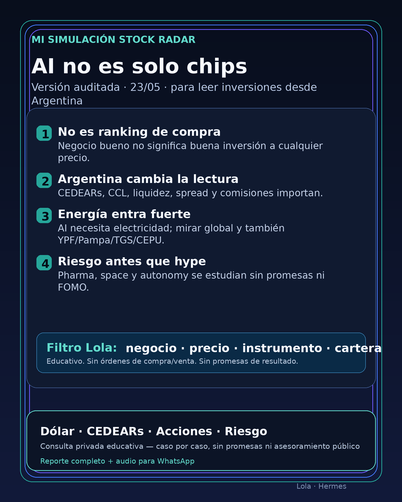

AI no es solo chips
Lectura educativa para Argentina: negocio, precio, instrumento, dólar implícito y riesgo. Sin cuadro amarillo, sin ranking de compra, sin promesas.

Mi Simulación Stock Radar — 23/05 — versión auditada
1. Lectura simple del día
La idea de hoy, en criollo: la inteligencia artificial sigue siendo importante, pero no alcanza con mirar “la acción de moda”. Detrás de AI hay una cadena completa:
- chips y servidores;
- fábricas de chips;
- memoria;
- data centers;
- electricidad;
- empresas que pueden financiar infraestructura enorme;
- software que convierte esa infraestructura en negocio real.
Para una persona en Argentina, la pregunta no es solo “¿NVIDIA sube o baja?”. La pregunta correcta es:
¿Qué estoy comprando realmente, en qué moneda, con qué instrumento, con qué liquidez y con qué riesgo?
Este radar no es una lista de compra. Es una guía educativa para entender qué mirar antes de decidir.
2. Qué significa esto para alguien en Argentina
Desde Argentina, invertir en acciones globales suele mezclar varias capas:
1. La empresa real: NVIDIA, Google, Tesla, Novo Nordisk, Rocket Lab, etc.
2. El instrumento disponible: acción afuera, CEDEAR local, ETF, fondo, bono, dólar MEP/CCL u otro vehículo.
3. El dólar implícito: muchos CEDEARs se mueven por la acción en EE.UU. y también por el CCL.
4. La liquidez: no alcanza con que exista un instrumento; hay que mirar volumen, spread y facilidad de entrada/salida.
5. La cartera personal: una empresa excelente puede ser mala decisión si entra a cualquier precio o concentra demasiado riesgo.
Dato de contexto dólar usado para esta edición: DolarAPI mostró MEP/Bolsa venta cerca de 1434,3 y CCL venta cerca de 1486,6, con actualización del 23/05 11:54 ART. Fuente: https://dolarapi.com/v1/dolares
3. Cuatro filtros antes de hacer algo
Antes de mirar cualquier ticker, usar estos filtros:
- Negocio: ¿entiendo cómo gana plata?
- Precio: ¿la acción ya descuenta un futuro perfecto?
- Instrumento: ¿lo opero como acción, CEDEAR, ETF, fondo o solo lo sigo como referencia?
- Cartera: ¿qué pasa si cae 30%, 40% o 50%? ¿Necesito esa plata pronto?
Una empresa buena no es automáticamente una buena inversión al precio actual. Y una buena inversión afuera puede no ser un buen instrumento local si el CEDEAR tiene poco volumen, spread alto o dólar implícito caro.
4. Mapa AI para no comprar humo
La tesis de AI se entiende mejor por capas:
- Chips / cerebro: NVIDIA es el actor más fuerte de esta capa. AMD también compite, aunque hoy no fue el eje.
- Fábricas de chips: TSM es clave porque fabrica para gran parte del ecosistema.
- Máquinas para fabricar chips: ASML es cuello de botella por litografía avanzada.
- Memoria: MU entra por HBM/DRAM, necesaria para modelos grandes.
- Cloud y modelos: Google/Alphabet, Microsoft y Amazon compiten por infraestructura, modelos y distribución.
- Data centers y energía: sin electricidad, red y cooling, no hay AI factories.
- Software y uso final: PLTR y otros capturan valor si convierten AI en contratos reales.
- Hype peligroso: empresas que solo agregan “AI” al discurso sin ingresos, clientes o moat verificable.
5. Señales principales de hoy, ordenadas por utilidad educativa
Esto no está ordenado como recomendación de compra. Está ordenado por valor para entender el mercado.
A. NVIDIA — tesis fuerte, precio exigente
NVIDIA reportó Q1 FY2027 con ingresos de USD 81.6B y Data Center de USD 75.2B. La señal confirma demanda enorme de infraestructura AI.
En criollo: NVIDIA sigue cobrando peaje en el corazón de AI. El riesgo es que el mercado ya espera muchísimo. Cuando una empresa está cara, incluso buenos resultados pueden no alcanzar.
Estado: aprender / seguir / analizar con cuidado. No es “comprar porque es buena”.
Fuente: https://nvidianews.nvidia.com/news/nvidia-announces-financial-results-for-first-quarter-fiscal-2027
B. Google + Blackstone — AI también es capital y data center
Google anunció junto con Blackstone un proyecto de TPU cloud: Blackstone compromete inicialmente USD 5B y el plan espera 500MW online en 2027.
En criollo: no todo AI pasa por GPUs. También hay chips propios, edificios, energía, refrigeración, contratos y mucho capital. Para el inversor argentino esto sirve para entender la cadena, no para correr atrás de cualquier ticker que diga “data center”.
Estado: señal estructural / mirar exposición indirecta.
Fuente: https://blog.google/innovation-and-ai/infrastructure-and-cloud/google-cloud/blackstone-tpu-cloud/
C. Energía — central para AI, pero no compra automática
AI consume electricidad. Por eso utilities, generación, transmisión, transformadores, cooling y data centers pasan a ser parte de la tesis.
Para Argentina, esta sección importa doble:
- por CEDEARs o acciones globales vinculadas a energía/data centers;
- por empresas argentinas de energía que Charly sigue o puede mirar: YPF, Pampa Energía, Transportadora de Gas del Sur, Central Puerto y otras del ecosistema local.
Pero cuidado: una energética puede tener demanda real y aun así ser mala inversión si tiene deuda alta, regulación pesada, mal precio o riesgo político.
Estado: tema prioritario de seguimiento, no “comprar energéticas porque AI necesita luz”.
Fuentes de base del radar: filings SEC citados en el research nocturno para NextEra/Dominion; empresas locales requieren chequeo puntual de balance, regulación y precio antes de cualquier decisión.
D. Pharma / salud — GLP-1 explicado simple
GLP-1 es la familia de medicamentos para obesidad/diabetes que está moviendo miles de millones de dólares. Novo Nordisk y Lilly compiten fuerte ahí.
Novo tuvo señales regulatorias verificadas por SEC/6-K sobre Wegovy oral y Wegovy 7.2 mg. La FDA también publicó una warning letter a un proveedor chino de semaglutide API, mostrando riesgo de calidad en la cadena.
En criollo: pharma puede hacer mucha plata, pero no es “seguro”. Hay ensayos clínicos, aprobaciones, patentes, competencia, producción y regulación.
Estado: seguir / aprender mercado GLP-1 / no simplificar como apuesta fácil.
Fuentes: https://www.sec.gov/Archives/edgar/data/353278/000117184326003634/f6k_052226.htm y https://www.fda.gov/inspections-compliance-enforcement-and-criminal-investigations/warning-letters/harbin-jixianglong-biotech-co-ltd-723330-05012026
E. Rocket Lab / space — atractivo, pero alto riesgo
Rocket Lab sigue en radar por space systems, defensa y lanzamientos. Pero SEC muestra un programa para vender acciones por hasta USD 3.0B.
En criollo: puede servir para financiar crecimiento, pero también puede diluir. Si hay más acciones dando vueltas, tu pedacito proporcional de la empresa vale menos.
Estado: alto riesgo / especulativo / estudiar, no núcleo de cartera.
Fuente: https://www.sec.gov/Archives/edgar/data/1819994/000181999426000044/rocketlabcorporation-424b5.htm
6. Watchlist práctica para lector argentino
- NVDA: aprender/seguir. Antes de operar desde Argentina, verificar instrumento disponible, liquidez, spread y dólar implícito.
- GOOGL/GOOG: seguir por AI, TPU, cloud y Waymo. Exposición indirecta a varias tesis.
- TSM / ASML / MU: entender la cadena de semiconductores. Pueden ser excelentes negocios, pero son cíclicos o sensibles a geopolítica/capex.
- PLTR: software AI con narrativa fuerte. Riesgo: valuación y separar contrato real de hype.
- AAPL: no venderla como “AI moat” sin señal concreta. Es más ecosistema/dispositivo que AI pura.
- HOOD: fintech/broker. Seguir si hay monetización real o producto claro, no solo narrativa.
- TSLA: autonomía, energía y robotaxis; muy dependiente de promesas futuras y valuación.
- NVO / LLY: pharma/GLP-1. Mirar regulación, ensayos, capacidad productiva y competencia.
- RKLB: space/defensa. Alto riesgo, volatilidad y posible dilución.
- YPF / PAMP / TGS / CEPU: capa Argentina de energía. No fueron el titular verificado de esta edición, pero desde Argentina deben estar en el radar porque energía local, regulación, tarifas, Vaca Muerta, exportaciones y dólar pueden pesar tanto como AI global.
- Gold / GLD / GOLD / B: no mezclar oro físico, ETF, minera o ticker ambiguo. Primero instrumento exacto.
- RVI: fondo cerrado; mirar NAV, premium/descuento, liquidez y documentación. No tratarlo como compañía operativa.
7. Dólar, CEDEARs y costos invisibles
Para Argentina, esta parte no es decorativa: es central.
- Si comprás un CEDEAR, no solo mirás la acción afuera; también mirás el CCL implícito.
- Un CEDEAR puede subir porque subió la acción, porque subió el dólar implícito, o por las dos cosas.
- También puede pasar lo contrario: la empresa sube en EE.UU., pero el movimiento local queda neutralizado por el dólar implícito.
- Spreads y comisiones importan. En instrumentos con poco volumen, entrar y salir puede salir caro.
- Antes de operar, mirar: volumen local, punta compradora/vendedora, ratio del CEDEAR, comisiones, horizonte y tamaño dentro de cartera.
8. Autonomy / physical AI
Autonomía no es una sola empresa:
- Waymo: exposición indirecta vía Alphabet.
- Tesla: autos, energía, robotaxis, robotics; mucho futuro en precio.
- Uber: puede beneficiarse de robotaxis o sufrir si cambia la estructura de movilidad.
- Amazon/Zoox: exposición indirecta, no pure play.
- Joby: eVTOL/air taxis, muy alto riesgo y dependiente de regulación.
Estado: seguir como tendencia, pero no comprar promesas sin ingresos verificables.
9. Red flags para no comerse humo
- “AI” pegado a cualquier empresa sin ingresos reales.
- Ranking leído como orden de compra.
- CEDEAR comprado sin mirar CCL, spread y liquidez.
- Energética comprada solo porque “AI consume electricidad”.
- Pharma tratada como segura sin mirar ensayos/regulación.
- Rocket Lab presentada sin mencionar dilución.
- SpaceX/Starlink tratados como comprables si no hay instrumento público claro.
- Bots de trading que prometen 10x, autonomía total o real money sin paper mode.
10. Antes de invertir, preguntate
- ¿Estoy entendiendo o estoy entrando por FOMO?
- ¿Necesito esta plata en menos de 12 meses?
- ¿Tengo fondo de emergencia?
- ¿Qué pasa si cae 30%, 40% o 50%?
- ¿Estoy concentrando todo en AI?
- ¿Estoy mirando negocio, precio, instrumento y cartera, o solo el titular?
- ¿Sé si estoy comprando acción, CEDEAR, ETF, fondo o exposición al dólar?
11. Qué mirar después
- NVIDIA: guía, márgenes, demanda real y valuación.
- Google/Blackstone: permisos, energía, clientes y avance real del TPU cloud.
- Energía global y argentina: regulación, deuda, tarifas, Vaca Muerta, exportación, generación y transmisión.
- GLP-1: aprobaciones, producción, ensayos y competencia.
- RKLB: uso del programa de emisión y contratos de defensa.
- Argentina: dólar MEP/CCL, liquidez de CEDEARs, spreads y riesgo local.
12. Cierre educativo
Este radar sirve para aprender a leer mercados y separar negocio, precio, instrumento y riesgo. No es asesoramiento financiero personalizado ni recomendación de compra o venta.
Si querés una consulta privada, el foco correcto es educativo: dólar, CEDEARs, acciones, riesgo, horizonte y armado básico de cartera caso por caso. Sin promesas de resultado y sin órdenes públicas de compra/venta.